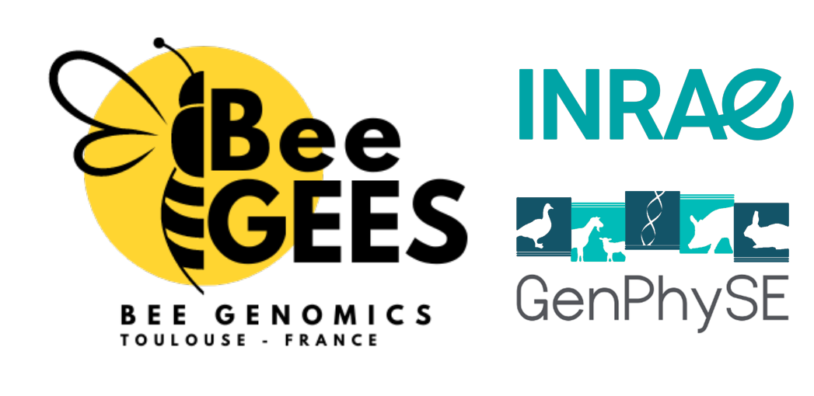

 Contact: Thibault (Tibo) Leroy - Email Genetics, Physiology and Livestock Systems (GenPhySE) Office: C406, INRAE Occitanie-Toulouse 24 Chemin de Borde Rouge, 31326 Castanet-Tolosan, France Twitter Mastodon